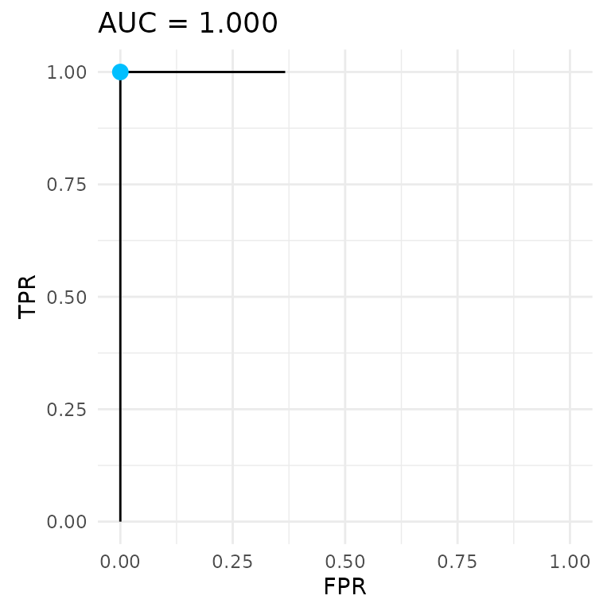

Evaluation and plots
evaluation.RmdThis chapter defines the three measures, draws the ROC curve, and runs mlr3’s resampling, benchmarking and tuning on changepoint tasks. Every run is small, so the page builds quickly.
Measures
A PredictionCpt holds one predicted
log(lambda) per sequence. To score it, a measure rebuilds
each model path up to the Kmax recorded in the prediction,
picks the model the penalty selects and compares it with the labels.
Measures need the task for this:
prediction$score(measure, task = task).
resample() and benchmark() pass it
automatically.
Each labelled region is either right or wrong. A region has a false positive when the model puts more changes or peaks in it than the label allows, and a false negative when it puts in fewer than the label needs.
changepoint.label_error is the share of labelled regions
with an error. Sequences have different numbers of labels, so the
measure sums errors and labels over all sequences before dividing. For
sequence i, let \mathrm{FP}_i and \mathrm{FN}_i be its false positives and
false negatives, L_i its number of
labels and w_i its measure weight,
which is 1 by default:
\text{label error} = \frac{\sum_i w_i \left(\mathrm{FP}_i + \mathrm{FN}_i\right)}{\sum_i w_i L_i}.
changepoint.label_accuracy is one minus the label
error.
changepoint.auc is the area under the ROC curve. Adding
the same constant to every predicted log(lambda) moves all
sequences towards simpler or more complex models. Each shift gives a
false positive rate, the false positives over the regions that can have
one, and a true positive rate, one minus the false negatives over the
regions that can have one. The curve can loop, so the AUC can exceed 1
(Hillman and Hocking, 2023). It is NA when no region can
have a false positive, or none can have a false negative.
Data
The examples use two small tasks of twenty sequences each, one with changepoint labels and one with peak labels. Half the sequences of each have a signal and half are flat.
set.seed(36)
signal = vector("list", 20L)
label = vector("list", 20L)
for (i in seq_len(20L)) {
if (i %% 2L == 1L) {
signal[[i]] = c(rnorm(100, 18), rnorm(100, 36), rnorm(100, 9))
label[[i]] = data.table(start = c(90, 190), end = c(110, 210), label = "1change")
} else {
signal[[i]] = rnorm(100, 0)
label[[i]] = data.table(start = 1, end = 100, label = "0changes")
}
}
cpt_task = TaskCpt$new(
id = "changepoints", backend = data.table(signal = signal, label = label),
target = "label", sequence = "signal", label_type = "changepoint"
)
counts = vector("list", 20L)
peak_label = vector("list", 20L)
for (i in seq_len(20L)) {
if (i %% 2L == 1L) {
counts[[i]] = c(rpois(60, 2), rpois(40, 25), rpois(100, 2))
peak_label[[i]] = data.table(start = c(1, 55), end = c(50, 105), label = c("noPeaks", "peaks"))
} else {
counts[[i]] = rpois(200, 2)
peak_label[[i]] = data.table(start = 10, end = 190, label = "noPeaks")
}
}
peak_task = TaskCpt$new(
id = "peaks", backend = data.table(counts = counts, label = peak_label),
target = "label", sequence = "counts", label_type = "peak"
)Resampling
resample() trains on part of the sequences and scores
the rest. This runs three-fold cross-validation of the boosted-tree
learner on the changepoint task.
measures = msrs(c("changepoint.label_error", "changepoint.auc"))
learner = lrn("changepoint.xgboost.aft", Kmax = 3L, nrounds = 20L)
set.seed(1)
rr = resample(cpt_task, learner, rsmp("cv", folds = 3L))
rr$score(measures)[, .(iteration, changepoint.label_error, changepoint.auc)]
#> iteration changepoint.label_error changepoint.auc
#> <int> <num> <num>
#> 1: 1 0 1
#> 2: 2 0 1
#> 3: 3 0 1
rr$aggregate(measures)
#> changepoint.label_error changepoint.auc
#> 0 1$score() gives one row per fold, and
$aggregate() averages them.
The ROC curve
autoplot(type = "roc") draws the curve the AUC
integrates. Here the predictions of the three folds are pooled, and each
sequence keeps the penalty predicted by the model that did not see
it.
autoplot(rr$prediction(), task = cpt_task, type = "roc")
Without type, autoplot() draws the
segmentation of each sequence, as in Getting started.
Benchmarking
benchmark() runs several learners on several tasks with
the same folds for every learner.
learners = list(
lrn("changepoint.intregrcv", Kmax = 3L, n.folds = 2L, min.observations = 2L),
lrn("changepoint.xgboost.aft", Kmax = 3L, nrounds = 20L)
)
set.seed(1)
design = benchmark_grid(list(cpt_task, peak_task), learners, rsmp("cv", folds = 3L))
bmr = benchmark(design)
bmr$aggregate(measures)[, .(task_id, learner_id, changepoint.label_error, changepoint.auc)]
#> task_id learner_id changepoint.label_error changepoint.auc
#> <char> <char> <num> <num>
#> 1: changepoints changepoint.intregrcv 0 1
#> 2: changepoints changepoint.xgboost.aft 0 1
#> 3: peaks changepoint.intregrcv 0 1
#> 4: peaks changepoint.xgboost.aft 0 1mlr3benchmark turns the result into a table of aggregated scores for
comparing learners across tasks. as_benchmark_aggr() drops
the changepoint. prefix from the learner and measure
ids.
ba = mlr3benchmark::as_benchmark_aggr(bmr, measures = measures)
ba
#> <BenchmarkAggr> of 4 rows with 2 tasks, 2 learners and 2 measures
#> task_id learner_id label_error auc
#> <fctr> <fctr> <num> <num>
#> 1: changepoints intregrcv 0 1
#> 2: changepoints xgboost.aft 0 1
#> 3: peaks intregrcv 0 1
#> 4: peaks xgboost.aft 0 1
ba$rank_data(meas = "label_error")
#> changepoints peaks
#> intregrcv 1.5 1.5
#> xgboost.aft 1.5 1.5$rank_data() ranks the learners within each task, with
rank 1 for the lowest label error. With more tasks,
$friedman_test() and autoplot(ba) compare the
ranks.
Tuning Kmax
Kmax can be tuned like any other hyperparameter.
auto_tuner() from mlr3tuning wraps a learner so that each
training run picks Kmax by an inner resampling. This one
scores a grid of 1 to 4 by label error over two inner folds.
at = auto_tuner(
tuner = tnr("grid_search"),
learner = lrn("changepoint.xgboost.aft", Kmax = to_tune(1L, 4L), nrounds = 20L),
resampling = rsmp("cv", folds = 2L),
measure = msr("changepoint.label_error")
)Resampling the tuned learner gives nested cross-validation: each
outer fold is scored with a Kmax chosen without it.
set.seed(1)
rr_tuned = resample(cpt_task, at, rsmp("cv", folds = 3L), store_models = TRUE)
extract_inner_tuning_results(rr_tuned)[, .(iteration, Kmax, changepoint.label_error)]
#> iteration Kmax changepoint.label_error
#> <int> <int> <num>
#> 1: 1 4 0.0500000
#> 2: 2 4 0.0000000
#> 3: 3 2 0.2777778
rr_tuned$aggregate(measures)
#> changepoint.label_error changepoint.auc
#> 0 1The odd sequences need two changes, so Kmax = 1 leaves a
false negative on each of them. Each outer prediction records the
Kmax its tuner chose, and the measures use it.